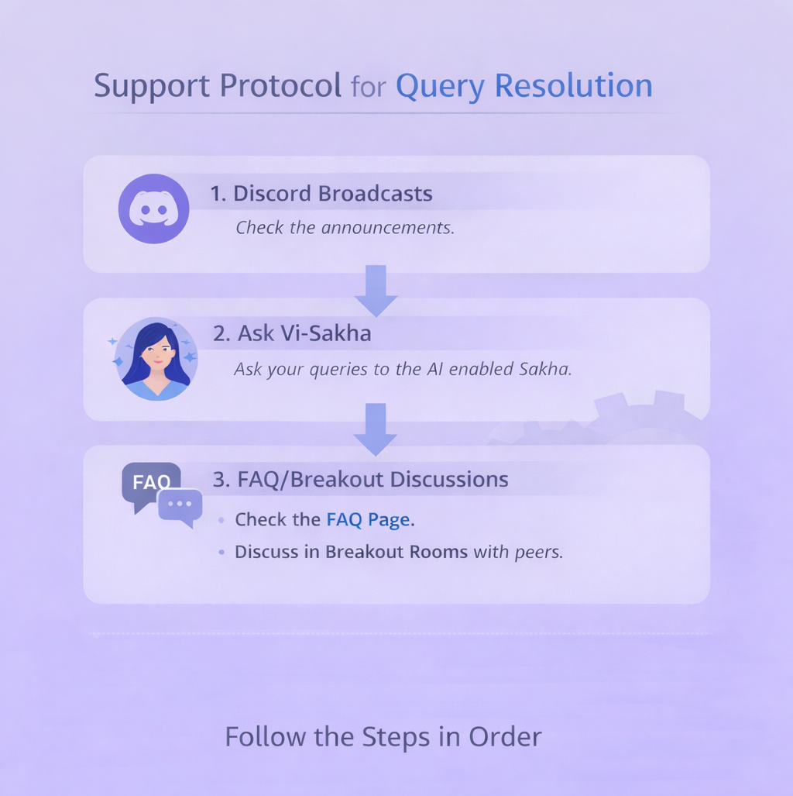

Protocols and Policies
Support and Resolution Protocol

The Vinternship programme follows a structured support and grievance redressal mechanism. If you have a query, please follow the steps below in order:
1. Telegram Broadcast
Check the official Telegram Broadcast Channel for announcements, instructions, and updates. Often, the answer to your query has already been posted.
2. Ask Vi-Sakha
Utilize Vi-Sakha to find answers to common questions and immediate assistance.
3. Breakout Discussion
Discuss with your peers in the breakout rooms. Your fellow interns might have faced and solved the same issue.
4. Support Desk
If your query remains unresolved, write to the Support Desk at vinternship@vicharanashala.zohodesk.in. Our support team will respond within 2 hours of your submission (between 9 AM to 9 PM). Any question submitted beyond 9 PM will be answered the next day. Please ensure that the subject of the email follows the structure “CohortName_NPTELID/FullName_YourEmailSubject”.
If you do not receive a response within 24 hours, you may raise a second ticket with the subject line: “Attention Please – Follow-up on Ticket #[Original Ticket Number]”. This ticket will be escalated to our Mentors Team, who will assume responsibility for it. They will schedule a call discussion to ensure your issue is clearly understood and resolved directly.
If your concern remains unaddressed after 48 hours of your first ticket (and after raising a follow-up), you may escalate the matter via email to the Internship Sponsor. Please CC Prof. Sudarshan Iyengar directly, along with your department’s faculty reference, your department HOD, and the DLED Team at dled@iitrpr.ac.in. Ensure that your email includes your full name, department, reference numbers and dates of the two Zoho Desk tickets, and a brief explanation of the unresolved issue.
To maintain consistency and ensure efficient support, we request all interns to strictly follow this three-step resolution path for all issues.
Ejection Policy
A Culture of Momentum: The Ejection Policy

To maintain a high-energy environment, the program prioritizes sustained effort and active engagement over passive participation. We believe a learning community thrives when every participant contributes to the collective “pulse,” which is why we employ a dynamic Ejection Policy to ensure the cohort remains focused. This system recognizes two distinct paths of movement:
Forward Eject (The Ascent)
Super-performers who consistently stay at the top of the cohort and demonstrate exceptional performance are “ejected” upward into advanced leadership opportunities. These individuals may also be considered for prestigious fellowship nominations based on their demonstrated capability and reflective practice.
Backward Eject (The Departure)
To preserve the quality of the experience and focus resources on committed learners, participants who remain persistently idle are removed from the cohort. This ensures that collaborative activities, such as peer-to-peer viva sessions, are conducted among interns who are equally invested in their growth.
The Progress Algorithm
We ensure transparency and fairness by using an automated, dual-criteria filter to identify idle participants. A Backward Eject is only triggered if an intern meets both of the following conditions simultaneously:
-
Daily Progress: Your completion rate on the ViBe platform falls below 3.33% per day.
-
Cohort Standing: Your overall engagement level ranks within the bottom 10% of the active cohort.
By maintaining a pace above this threshold, you ensure your spot in the program remains secure while you build meaningful professional artifacts, including case studies and reflective blogs.
For additional questions, refer to our FAQ or contact support.